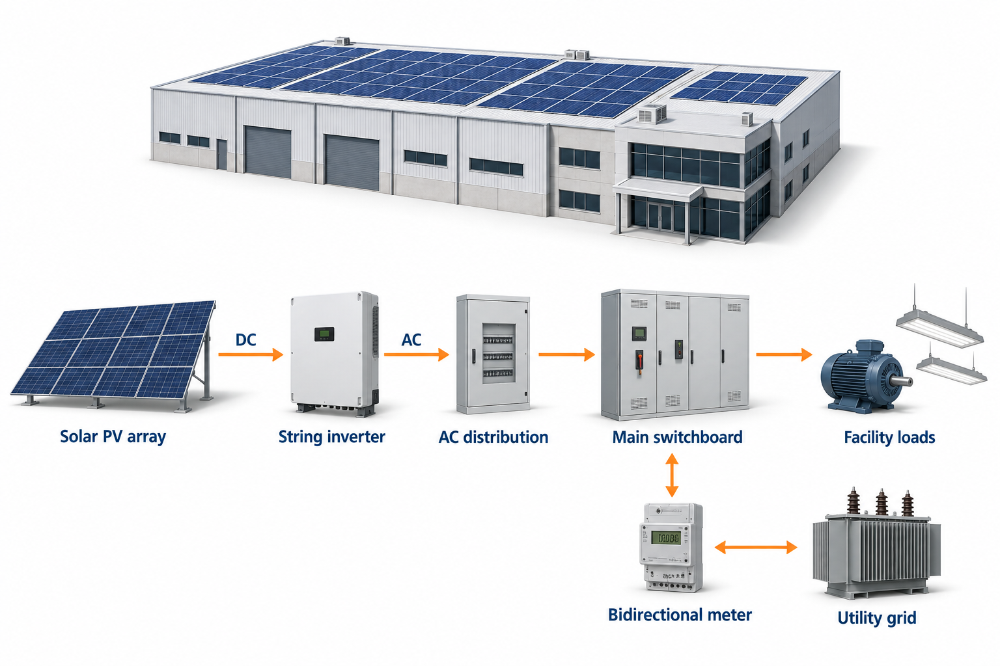
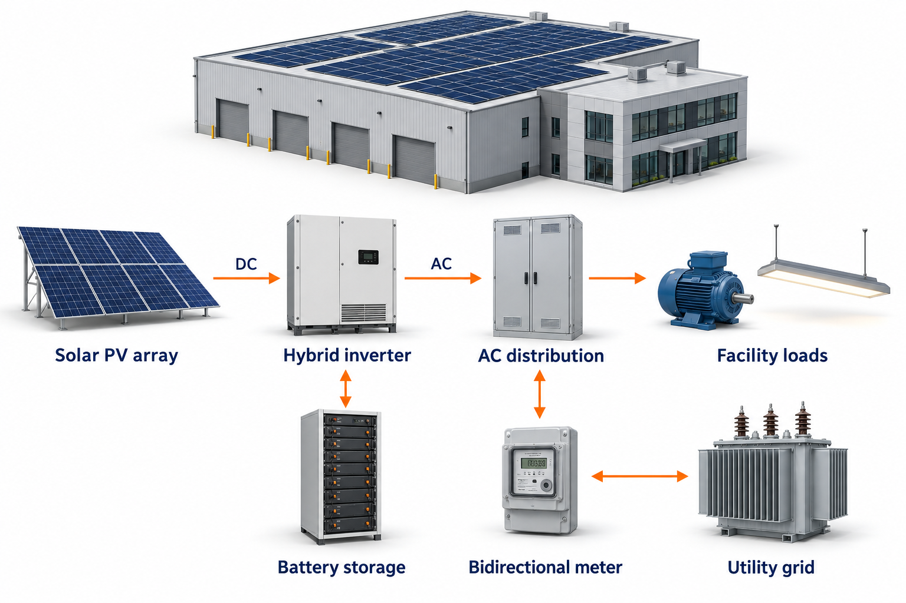

Ray2Volt Solar sales playbook
Solar Sales SOP
Two playbooks, one page. Pick the one that matches the customer in front of you — a home is sold on comfort and subsidy, a plant is sold on returns, technology and metering.
Use this guide to explain the right system, answer common questions, and set clear expectations from the first conversation.
| Feature | On-Grid Solar | Hybrid Solar |
|---|---|---|
| Batteries | None | Included |
| Power Cuts | System shuts down | Seamless backup 24/7 |
| Cost Profile | Lowest investment | Higher because of batteries |
| Subsidy Eligible | Yes (PM Surya Ghar) | Yes (PM Surya Ghar) |
On-Grid Solar System
Connected directly to the electricity grid. Excess power earns credit through net metering—no batteries needed, lowest cost.
How On-Grid Works

- Solar panels generate electricity during the day, powering the home directly.
- Excess power is exported to the grid; the net meter records credit.
- At night, grid power is used as usual, while daytime credits offset the bill.
- No batteries are required, so the system costs significantly less.
- Installation is completed without disturbing existing house wiring.
Best for: Homes and businesses with reliable grid power and minimal power cuts. Maximum savings with low maintenance.
Key Numbers (Example: 3 kW System)
System Components
On-Grid Brands
DCR Solar Panels
NDCR Solar Panels
On-Grid Inverters
Hybrid Solar System
Grid-connected with battery backup. Uninterrupted power 24/7—solar during the day and stored energy at night.
How Hybrid Works

During the Day
- Solar panels power the home directly, even during a grid power cut.
- Excess solar energy charges the batteries.
- Remaining surplus is exported for net-metering credit.
During the Night
- Lithium-ion batteries automatically run ACs, fridges, lights, and fans.
- 90% depth of discharge uses far more stored energy than lead-acid batteries.
- Switching is seamless—no flicker or disruption.
During Power Cuts
- In daytime cuts, panels deliver power directly.
- During evening or night cuts, batteries take over instantly.
- The home remains comfortable with 24/7 uninterrupted power.
Best for: Areas with frequent power cuts and families who want round-the-clock comfort without UPS or generator hassles.
Battery Options
Lithium-Ion — Recommended
Why lithium? 10+ year life, lighter weight, faster charging, and 90% usable energy. Ideal for high-power appliances.
Lead-Acid Tall Tubular — Budget Option
System Components
Hybrid Brands
DCR Solar Panels
NDCR Solar Panels
Hybrid Inverter
Batteries
App Monitoring & Maintenance
Smart Monitoring: Track live solar generation from a smartphone with the Wi-Fi-enabled app.
Zero-Hassle Cleaning: Wash panels with water every few weeks, depending on dust. No special chemicals are needed.
PM Surya Ghar Muft Bijli Yojana
Government subsidy for residential rooftop solar, credited directly to the customer’s bank account after DISCOM approval.
Eligibility: An Indian citizen with a valid LT-1 electricity connection, a suitable rooftop, and no prior subsidy benefit.
Easy Solar Loan Option
The EMI can be lower than the current electricity bill, so customers can save from day one. Higher loan amounts are also available.
Partner Banks (PSU only)
Returns: ROI & IRR
Customers who compare solar against a fixed deposit or mutual fund will ask for these two numbers. Quote them from the Solar Savings Calculator for the customer's own bill — the figures below are a typical 3 kWp residential on-grid system, after PM Surya Ghar subsidy.
ROI in plain words: how many times the customer gets their money back over the system's life. A 3 kWp system at ₹2,26,400 — about ₹1,48,400 after subsidy — saves roughly ₹12–17 lakh of electricity over 25 years, eight to eleven times the amount invested. The calculator prints this as a percentage, so 800% means the customer earns eight times their money back on top of getting it back.
IRR in plain words: the yearly rate of return, so it can be compared like for like against an FD or SIP. Solar at 23–32% beats a bank FD several times over, and unlike an FD the returns are tax-free and rise as tariffs go up.
How to pitch it: "Your bill is money you never get back. The same money in solar pays for itself in about four years and then keeps returning free power for another twenty." Always show the customer's own numbers from the calculator — never promise a figure the report does not print.
Both figures are project returns on the net cost after subsidy, before any loan. With a loan the customer pays EMI instead of cash up front, so quote the EMI-versus-bill comparison alongside, not in place of, these returns.
Project Timeline
- Week 1 — Material Procurement & DeliveryPanels, inverter, mounting structure, and batteries for hybrid systems are procured and delivered.
- Weeks 2–3 — Full System InstallationThe certified team completes mounting, wiring, inverter setup, and battery integration.
- Week 4 — Net Meter & Subsidy ApplicationRay2Volt coordinates with DISCOM and starts the subsidy redemption process.
A commercial roof is bought on numbers, not on comfort. The buyer is an owner, a CFO or a plant head who already knows what a unit costs them. Lead with the return, prove it with the technology, and settle the metering question in the first meeting.
| Question | Net Metering | Gross Metering |
|---|---|---|
| Where does the power go? | Runs the plant first; only the surplus leaves the site | Every unit is exported; the plant keeps buying at retail |
| What is a unit worth? | The retail tariff avoided — ₹7–10 on a commercial connection | A fixed DISCOM feed-in tariff, well below retail |
| How is the plant sized? | To the day-time load, capped at sanctioned load | To the available roof, independent of load |
| How is it settled? | Units net off each billing cycle; unadjusted surplus settles annually | Generation is billed and paid separately from consumption |
| Who is it for? | Any site consuming its own generation in daylight — nearly every C&I roof | Sites with little or no day-time load |
| Does Ray2Volt quote it? | Yes — this is the standard C&I arrangement | Only where the DISCOM mandates it for that category |
On-Grid, Net-Metered
The default C&I build. Solar carries the plant through the working day and the bidirectional meter credits whatever the plant does not use.
How Net Metering Works On Site

- The array feeds the plant's own main switchboard first, so every unit generated is a unit not bought.
- Only what the plant cannot absorb passes through the bidirectional meter to the grid.
- Export and import net off against each other in the billing cycle; the DISCOM bills the difference.
- The plant runs on grid power outside daylight, offset by the credit banked during the day.
- Anti-islanding protection shuts the inverter down during a grid outage, so this build gives no backup.
Best for: Factories, warehouses, hospitals, hotels, schools and offices that consume most of their power in daylight and have stable grid supply. Lowest cost per unit generated and the fastest payback we can build.
The Numbers (Example: 20 kWp)
Toolbox 20 kWp commercial on-grid package at ₹9,56,000 including GST, tariff assumed at ₹8.50 a unit. Larger capacities price lower per watt — quote those from the Pricing Desk, never from this example.
System Components
Preferred Makes
NDCR Solar Modules
Three-Phase String Inverters
Structure
DCR modules carry a premium that only pays for itself where a subsidy demands them. On a commercial connection, nothing does.
Hybrid With Storage
For plants that run a DG set through every outage, or a process that cannot drop mid-shift. Solar by day, stored energy across the gap, grid and DG last.
How Hybrid Works On A Plant

Through the Shift
- Solar carries the load directly; surplus charges the battery bank.
- Whatever remains once the bank is full exports for net-metering credit.
On an Outage
- Storage picks up the critical bus with no transfer gap, so the process does not drop.
- The DG set stays off, which is where most of the money is saved.
Overnight
- The grid runs the site and storage is held in reserve for outage cover.
- Where a time-of-day tariff makes the evening peak expensive, the bank can discharge into it instead.
Best for: Cold storage, moulding and casting lines, data and server rooms, hospitals, and any site whose DG runs more than about two hours a day.
When To Quote Storage
- The DG set runs more than roughly two hours a day. Diesel lands at ₹25–30 a unit — that is the number storage has to beat, not the grid tariff.
- A process cannot tolerate even a transfer gap, so changeover-based backup is not an answer.
- The connection carries a time-of-day tariff with an expensive evening peak.
- Outages are long enough that lost production, not comfort, is the cost being avoided.
Say it plainly when storage is wrong: a site with stable supply and no critical load should buy the on-grid plant. Storage lengthens payback, and a customer who finds that out after signing does not refer anyone.
Sizing The Battery
- Size to the critical bus, not to the whole plant. Separating critical load from comfort load is the first survey task.
- Lithium only on C&I — 90% depth of discharge, ten-year-plus life, and no ventilated battery room to build.
- Deye low-voltage stacks cover up to about 16 kWh; beyond that the quote moves to high-voltage, on request.
- Keep the storage cost on its own line in the proposal so the customer sees exactly what backup is costing them.
Preferred Makes
NDCR Solar Modules
Hybrid Inverter
Batteries
Returns: The C&I Case
Three things make a commercial roof pay back faster than a home: the tariff is higher, the GST comes back, and the plant can be depreciated. None of the three apply to a residential sale, and together they are the whole pitch.
Lever 1 — the tariff you stop paying. Commercial and industrial tariffs run roughly ₹7–10 a unit against ₹3–7 on a domestic slab, and they move up with each tariff order. Every unit the plant makes replaces a unit bought at the top of that range, which is why the same ₹/Wp pays back about a year faster on a factory than on a house.
Lever 2 — GST comes back. Solar EPC is taxed at 13.8% (70% goods at 12%, 30% service at 18%). A GST-registered business claims that as input credit, so on the 20 kWp example about ₹1.16 lakh of the ₹9.56 lakh price returns and the real outlay is ₹8.40 lakh. Confirm the customer is registered and that the invoice carries their GSTIN — an unregistered buyer pays the full amount and the payback stretches by roughly five months.
Lever 3 — accelerated depreciation. A solar plant depreciates at 40% on written-down value under Section 32, halved to 20% if it runs under 180 days in its first year, and the balance keeps depreciating after that. At a typical effective corporate rate the first year alone returns around a tenth of the base cost as tax saved. Tell the customer it exists and that it is worth having, then send them to their CA for the exact figure. Never write a depreciation number into the quote.
The worked example, end to end. The 20 kWp commercial package at ₹9,56,000 including GST. Input credit of ₹1,15,930 leaves ₹8,40,070 of actual cash. At 28,800 units a year and ₹8.50 a unit the plant saves ₹2,44,800 in year one, pays for itself in about three and a half years, and returns roughly 30% IRR across twenty-five years — before accelerated depreciation, which only improves it.
Figures assume 0.5% annual module degradation, 3% tariff escalation and ₹8,000 a year of maintenance, and are project returns on the cash cost after input credit. There is no subsidy in any of them — PM Surya Ghar does not apply to a commercial connection. Always re-run the customer's own twelve-month bill in the Solar Savings Calculator and quote what the report prints, not this page.
Net Metering: Sizing, Approval & Settlement
Sizing rules that decide what you can promise
- Net metering itself stops at 500 kWp. APERC Regulation 4 of 2023, in the gazette of 24 February 2024, lowered the net metering ceiling from 1 MW to 500 kWp per service and raised the gross metering ceiling to 5 MW. Above 500 kWp the plant is designed to consume its own generation with export blocked, not to bank credit — say so before you size it. Systems already commissioned, or holding an approved feasibility report, keep the terms they were approved under.
- Capacity is capped at the sanctioned load on the connection. A 100 kVA sanctioned load does not carry a 150 kWp plant — get the sanctioned load in writing before promising a capacity.
- Size to day-time consumption, not to the roof. A self-consumed unit is always worth the full tariff; an exported unit is worth only what the netting rules allow.
- Check the distribution transformer's remaining solar capacity. Feeders already loaded with rooftop solar can hold an application for months.
- A three-phase service is required. Upgrading a single-phase commercial connection is the customer's cost and the customer's timeline — flag it on the survey, not after the order.
Collect these on the first site visit
- The latest electricity bill, plus the last twelve months for the consumption study.
- Sanctioned load or contract demand proof, connection category and service number.
- GST registration certificate and company PAN.
- Board resolution or authorisation letter naming whoever will sign.
- Roof ownership proof, or the lease agreement with the owner's NOC.
- Shade-free roof area measurement and a site layout.
How settlement actually works. Export and import net off in each billing cycle and the DISCOM bills only the difference. Surplus carries forward month to month inside the settlement year. Anything still unadjusted at the end of that year is bought at the pooled cost of power, far below retail — which is the real reason to size a plant to its load rather than to its roof.
Say this before the first bill arrives: net metering offsets energy charges. Fixed charges and demand charges on a commercial connection are not waived, and a customer who discovers that on their own feels misled. Set the expectation in the proposal meeting.
Metering, Credits & ToD On A Real Capacity
Pick a capacity. Every figure below rebuilds on the same numbers as the pre-built financial deck for that plant, so what you say in the meeting and what is in the customer's hand agree.
1 · What this capacity is allowed to do
LT → HT 500 kWp
cap 250 kWp
Net metering stops at 500 kWp per service under APERC Regulation 4 of 2023, gazetted 24 February 2024. Gross metering runs to 5 MW above it. Plants already commissioned, or holding an approved feasibility report, keep the terms they were approved under.
2 · What one unit is worth, three ways
A credit is a unit, not a rupee. Whatever is exported is held as kilowatt-hours and redeemed later as kilowatt-hours — one unit back for one unit sent, whatever the tariff did in between. Netting is per billing cycle, the carry-forward runs to the close of the settlement year on 31 March, and APERC has directed the DISCOMs to settle prosumers monthly by electronic transfer.
3 · The same units under a time-of-day tariff
The counter, which is the honest storage pitch. The expensive units sit in the evening peak, where solar has already stopped. A battery charged in the solar window and discharged into that peak arbitrages the gap between the two rates — that, not backup, is the reason to quote a hybrid build to a ToD customer running an evening shift.
The band widths above are a shape, not a schedule. ToD windows and rates are set category by category and move with each tariff order; they are printed on the customer's own bill. Read them off the bill — never quote a window or a rate from this page. The 20% floor and the 1.1× peak cap are national bounds under the Electricity (Rights of Consumers) Rules, which is why they are safe to state.
4 · Which lines on the bill actually move
| Bill line | Does solar move it? | On this plant |
|---|
Where a demand reduction can still be earned. If a year of meter data shows the plant genuinely shaving recorded maximum demand, the customer can apply to reduce contract demand and cut that charge for good. It is a review held after twelve months of readings, backed by the monitoring portal — a reason to stay in touch after commissioning, not a number to put in a proposal.
The Technology That Decides The Quote
A C&I buyer compares quotes on specification, not on brochure photographs. These are the six places where two quotes for the same capacity genuinely differ.
The four numbers a serious buyer will ask for
CUF and PR in plain words. CUF is how much of the plant's nameplate it actually delivers across a whole year. PR is how much of the sunlight that reached the modules survived to the meter. A buyer who asks for either is comparing quotes seriously — give the numbers, then show them the monitoring portal that will prove those numbers month after month.
Qualifying A C&I Site
Load and tariff
- What is the sanctioned load or contract demand, and which connection category?
- What did the last twelve bills average, in units and in rupees?
- What share of consumption falls between nine in the morning and five in the evening?
- Is there a time-of-day tariff, and what does the evening peak cost?
Site
- Shade-free roof area, roof type and roof age?
- Who owns the roof, and if it is leased, how many years remain?
- Is there a DG set — what rating, and how many hours a month does it run?
Money and people
- Is the entity GST registered, and profitable enough for depreciation to be worth anything?
- Own funds or financed, and is there a group office that approves capex?
- Who actually signs — owner, CFO, plant head, or someone in another city?
Why these decide the quote. Sanctioned load caps the capacity. The day-time share decides how much generation is worth full tariff. The lease term decides whether a twenty-five-year asset makes sense at all. And knowing who signs is what stops a three-month cycle stalling at the last meeting.
What Changes From A Residential Sale
No subsidy. PM Surya Ghar covers domestic LT-1 connections only. Never let a commercial customer believe a subsidy is coming — the ₹78,000 they saw on a poster does not apply to them.
GST is an asset, not a cost. On a home it is money gone. On a registered business it returns as input credit, so quote the price inclusive and show the credit on its own line.
DCR stops mattering. Domestic-content modules matter only where subsidy rules demand them, so a C&I roof takes NDCR and the saving goes to the customer.
More people, longer cycle. A home is one decision in one visit. A plant is a survey, a proposal, a CA's opinion and a sign-off — plan for eight to twelve weeks, not two.
The bill is the whole pitch. Bring the twelve-month bill analysis to the second meeting. A C&I buyer will not move on a generic savings claim.
Warranties get read. Expect module, inverter and workmanship terms to be checked line by line, and expect a question about what happens in year twenty-six.
C&I Project Timeline
- Week 1 — Site Survey & FeasibilityShade analysis, roof structural check, sanctioned load verification and a twelve-month bill study. The proposal is built on this, not on a phone call.
- Weeks 2–3 — Proposal, Approval & OrderTechno-commercial proposal, the customer's CA reviewing the depreciation case where it matters, and the purchase order.
- Weeks 3–5 — Net Metering ApplicationApplication to the DISCOM with sanctioned-load and ownership papers, followed by the technical feasibility sanction.
- Weeks 4–6 — Material Procurement & DeliveryModules, inverters, structure and cabling procured against the approved BOM and delivered to site.
- Weeks 6–9 — Installation & TestingStructure, array, inverter and LT panel interface completed, then string testing, earth resistance and insulation checks.
- Weeks 9–12 — Inspection, Net Meter & CommissioningElectrical inspectorate clearance where the capacity requires it, the DISCOM's net meter, and handover with the monitoring portal live.
Twelve weeks is the honest outer figure for a straightforward site. Say twelve and finish in nine; never say six and finish in eleven.
The Five C&I Objections
- “The capital is better spent in my business.”
- Ask what their business returns on capital. A rooftop at 27–36% IRR over a twenty-five-year life beats most working-capital uses, and unlike stock it cannot be left unsold. If capital is genuinely tight, move to the loan — the EMI on a commercial system usually sits below the bill it replaces.
- “What if I shift premises?”
- The plant either transfers with the building or comes down and goes back up. Quote relocation as a line item rather than dodging the question, and point out that a solar roof is a selling point on an industrial property.
- “My roof will start leaking.”
- Sheet roofs take non-penetrative clamps and nothing is drilled. RCC penetrations are sealed and covered by the workmanship warranty. Put the structure detail in the proposal — this objection is answered by drawings, not by reassurance.
- “What about the monsoon and cloudy days?”
- Generation drops, it does not stop, and the annual figure in the proposal already averages a full year including monsoon. Net metering means a weak month is covered by credit banked in a strong one.
- “Your quote is higher than the other one.”
- Ask to see their quote, then go to the structure, the cable sizing, the earth pits and the inverter count. Cheap C&I quotes save money in exactly those four places, and each one costs the customer generation or safety across twenty-five years. Put it side by side with the Comparison Sheet.